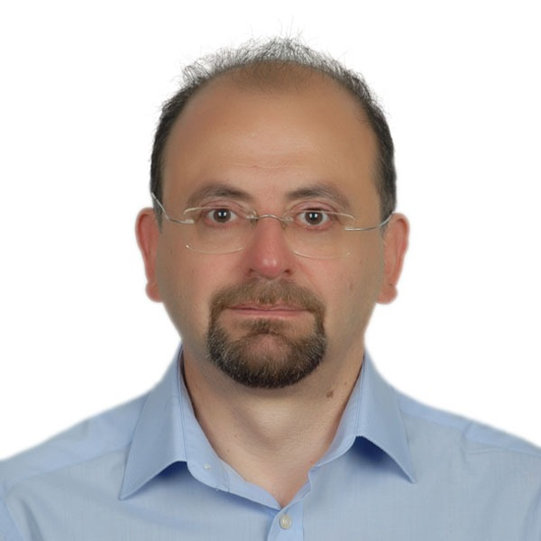
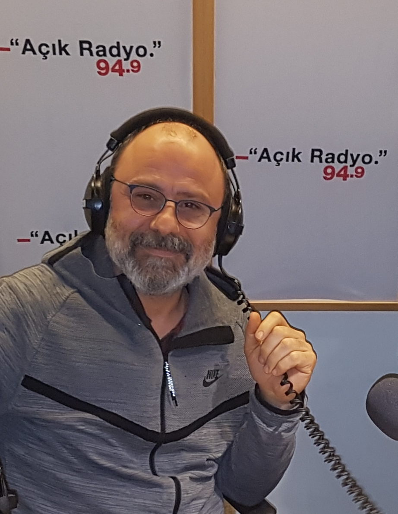
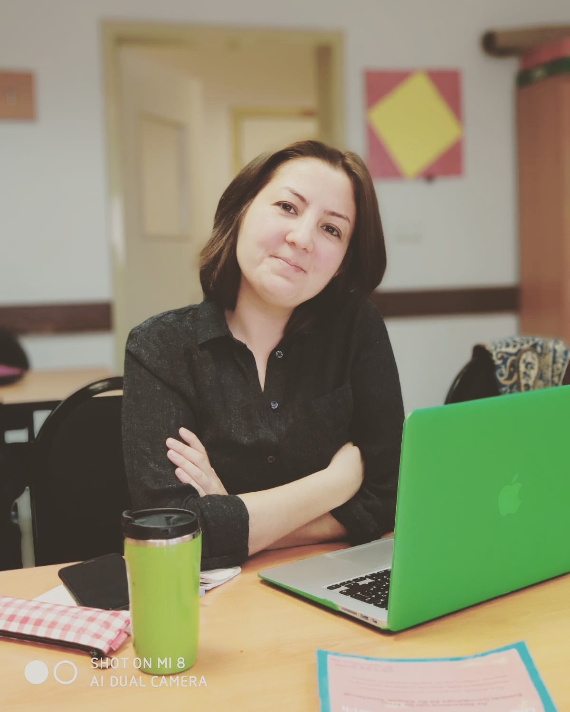
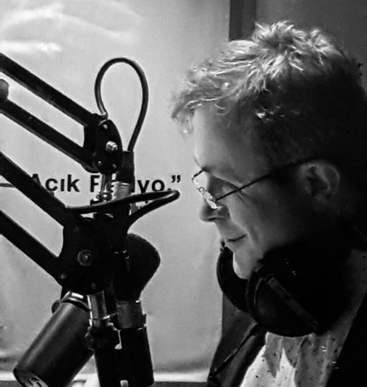

Haluk Levent
1961 İstanbul doğumludur. Galatasaray Lisesini bitirdikten sonra İTÜ İşletme Mühendisliği bölümünden mezun olmuş ve İstanbul Üniversitesi Sosyal Bilimler Enstitüsünden İktisat alanında doktor unvanını almıştır. Altınbaş Üniversitesi Uygulamalı Bilimler Fakültesi kurucu Dekan Vekilliğini yapan Haluk Levent halen Bilgi Üniversitesi İşletme Fakültesinde çalışmaktadır. Çeşitli uluslararası ve ulusal bilimsel yayınları ve projeleri bulunan Prof. Dr. Haluk Levent, “İşgücü İktisadı”, “Gelir Dağılımı” ve “Yoksulluk” alanlarında çalışmakta, “İktisat”, “Uygulamalı Ekonometri” ve “İstatistik” alanlarında çeşitli derslerin yanı sıra “Bilim, Teknoloji ve Toplum” dersini de vermektedir. Açık Radyo’da “Kavanozdaki Yıldız” programının yapımcılarından olan Haluk Levent ayrıca 2019 Mart’ından bu yana Medyascope Tv’de Prof. Dr. Öner Günçavdı ile birlikte haftalık “Ağır Ekonomi” programını da yürütmektedir.

İsmail Başöz
Tıp doktoruyum. Meslek yaşantımın cok büyük bölümünü spor dünyasında, takımlarla, sporcularla geçirdim. Tüm bu süreç boyunca her zaman meslek dışı uğraşlarım oldu. Bu arada "gereksiz bilgi"lere merakım hep taze kaldı. Bu merakla geleceğin ayak izlerini de açık radyo da takip etmeye başladık.

Fetiye Erbil
Boğaziçi Üniversitesi Yabancı Diller Yüksekokulunda Öğretim Görevlisi ve aynı üniversitede Öğrenme Bilimleri Doktora Programı öğrencisi olarak “Erken Çocukluk Eğitimde Sosyal Duygusal Öğrenme ve Öğretmen Mesleki Gelişimi” konusunda araştırmalarını sürdürmektedir. Lisans derecesini 2011 yılında Boğaziçi Üniversitesi Yabancı Diller Eğitimi bölümünden almış; 2013 yılında başladığı İlköğretim Yüksek Lisans Programını “Okul öncesi eğitimde çocukların katılım hakkı” konusunda yazdığı tezle tamamlamıştır.
İngilizce öğretim görevlisi olarak Altınbaş Üniversitesi ve sonrasında İstanbul Üniversitesi’nde çalışan Erbil, hem İngilizce hazırlık programlarında ve ayrıca Bilgi Üniversitesi İngilizce Öğretmenliği Bölümünde “Eğitim Bilimleri”, “Eğitim Psikolojisi”, “Eğitim Felsefesi” ve “Eğitim Sosyolojisi” derslerini vermiştir. Akademik çalışma ve ilgi alanları arasında; sosyal duygusal öğrenme, öğretmen öğrenmesi, çocuğun katılım hakkı, çocuk algısı, çocuklarla araştırma yöntemleri, eğitim politikaları ve eğitimin geleceği bulunmaktadır.
2017 sonbahardan beri ise Açık Radyo’da Cuma günleri 16.30’da yayınlanan Kavanozdaki Yıldız programının yapımcılarından biri olarak “bugünün penceresinden geleceğin ayak izlerini” sürmeye devam ediyor.

Mustafa Yılmazer
1970 doğumlu, İTÜ Makina Fakültesi Makina Mühendisliği 1993 dönemi mezunu. İTÜ Fen Bilimleri Enstitüsü Robotik Programı yüksek lisansını tez aşamasında bıraktı. 1995 yılından beri endüstriyel otomasyon konusunda makina ekipman ve otomasyonu konularında çalıştı. Halen bu konuda çalışan bir Alman şirketinin Türkiye şubesinin yöneticisi olarak çalışıyor.
Endüstriyel otomasyon konusunda yer alan mekanik sistem tasarımı, elektrik ekipmanları, kontrol sistemleri , robotik sistemler ve çevre birimleri, proses otomasyonu ve ilgili enstrümantasyon konularında çalışmaları olmuştur ve devam etmektedir.
İlgi alanı olarak, fizik, astronomi, bilim tarihi, tarih, tarım, çevre ve ekoloji konularının yanısıra spesifik olarak kuantum fiziği ve genel mühendislik uygulamalarının geleceği gibi konularda incelemeler yapmaktadır.